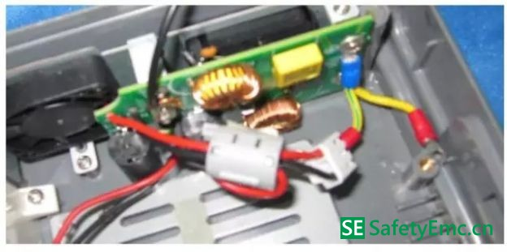

一、问题描述
某心电图机有6 刀功能，外接有心电感应连接线，3PIN 电源线，接地线,在进行EFT测试，测试2kv 是出现心电图波形显示异常，心率显示有严重的偏差较大。
二、问题分析：
经过等为分析发现电源端口没有加滤波电路, 产品的工作地与心电图的否地没有任何连接。
三、产品问题定位：
1. 在电源的L、N 加磁环和共模电感效果有改善，还是不能达到要求，测试波形还有异常；
2. 产品的工作地与心电图的否地之间加100pf 电容连接，产品波形正常，但是测试心率显示还有变化，注意：此电容容值不能超过200pf ，否则不能通过安规测试；
3. 将电源的地线先接入大地，在通过电感接入产品的工作地，测试心电波形正常，心率有变化；
4. 在心电感应连接线加磁环，测试心电波形正常，心率有变化；
四、整改措施：
整改方案为：
1. 在电源的L、N 加磁环和共模电感；
2. 将电源的地线先接入大地，在通过电感接入产品的工作地；

3. 产品的工作地与心电图的否地之间加100pf 电容连接；
4. 在心电感应连接线加磁环；
五、整改后的测试数据：
通过上述整改措施，可以通过EFT 测试 正负2kv。